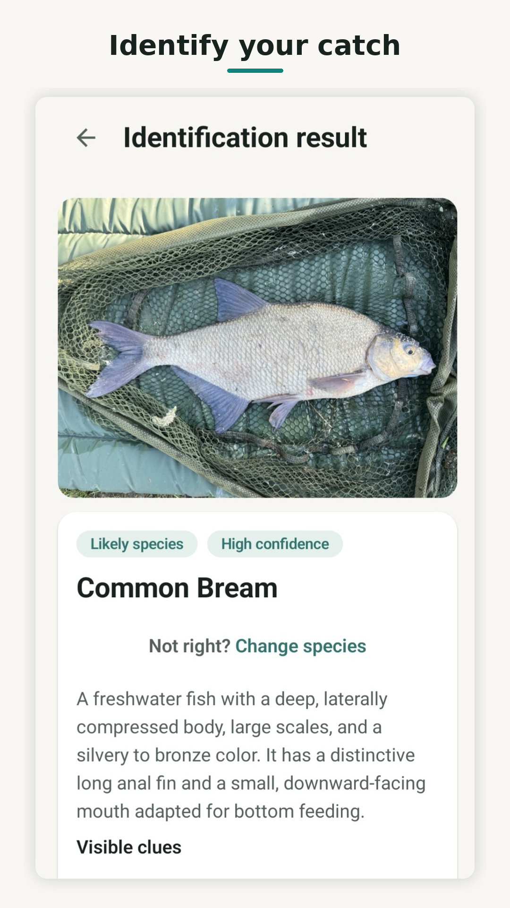
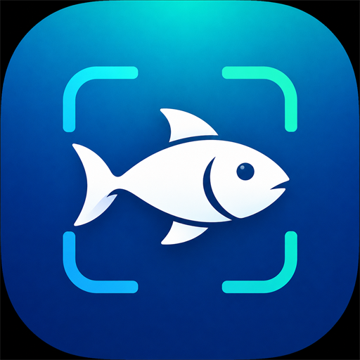

Help when you need it
A likely species.
The choice stays yours.
Use a photo for an identification suggestion, then correct it if needed. Manual entry is always an option.


CatchID Get CatchID freeFree Android fishing journal & fish ID
Save your catches, photos and fishing details in one personal journal. Get a likely fish identification from a photo, and discover personal records and insights as your fishing history grows.
Free to download on Android.
No account needed to start.
Know your fish? Add a catch without identification or a photo.

The fish.
The place.
The details.
One personal journal.
Catch by catch.
Identify · Journal · Insights
Start with what you know. Keep the details that matter. Revisit your fishing history as it grows.
Help when you need it
Use a photo for an identification suggestion, then correct it if needed. Manual entry is always an option.

Perspective over time
Explore Personal Records, Fishing Locations and Catch Insights from the catches you have recorded.

Ready for your next catch
Free to download on Android.
DESIGN CONCEPT — NOT LIVE · A: The journal-first story
Consent controls simulate appearance only. Nothing is stored or sent. Play links retain the existing destination and attribution.